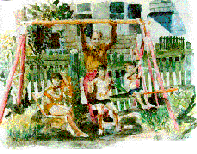

 a n d r e w . m u l l i n s
"You can't cage that thing."
"I'm not going to. I'm building an aviary."
She stared at me, the tears gone. "You need help."
She said that with such love I couldn't be sure how she meant it.... The Aviary.
l y d i a . e u g e n e
The father put the end of the gun in the sea-shell center of his daughter's ear. I was looking at the carpeting. All those grooves went round in circles with paths that led back to where they began- no out. The carpeting held things, spills of orange juice chocolate milk vomit booze, all spilled... Cabs.
g o l d a . f r i e d
Whisky became our new mouthwash of choice. Bathrooms on the road were grosser than we were. So we avoided them, I am not going to let him make me feel gross about this, my straggly heart sizzle sticks. Whisky, making the insides more parched all the time... like orange juice left out in the sun.
a a r o n . p a u l s o n
Space must be something like this: a gut-shot of queasiness from the blast-off. Dizzy colours spin along a trajectory. Nebulous clouds of light and gas hide planets and exploding stars... Rocket-Ship Boy